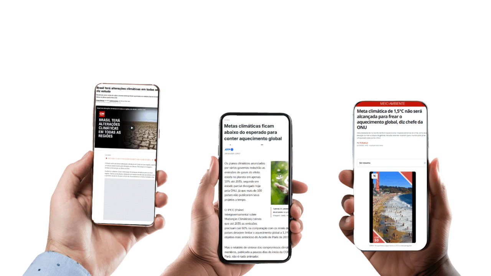
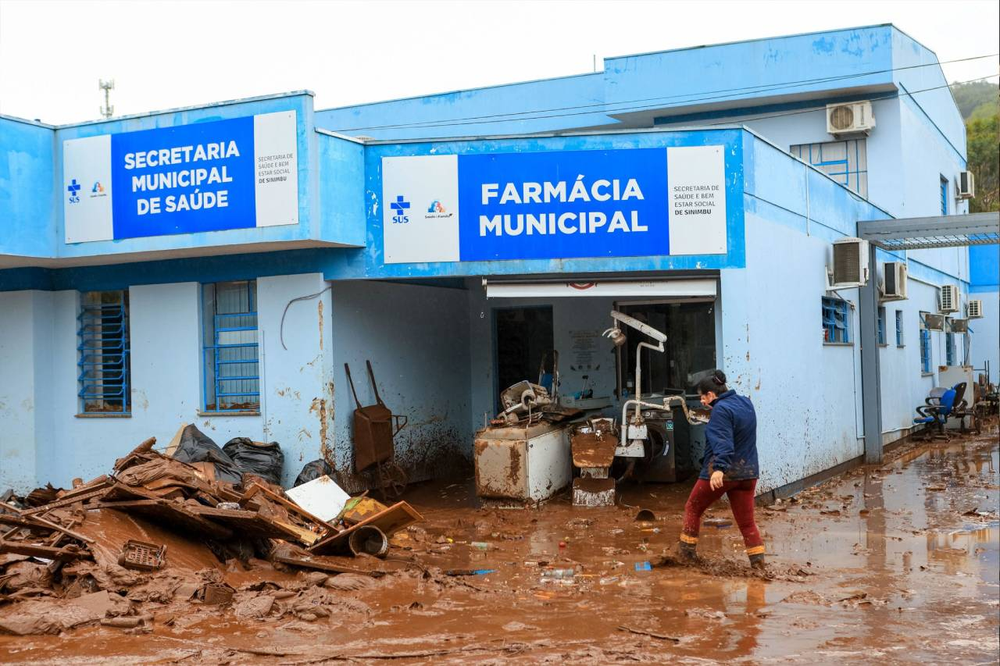

Impactos ambientais das mudanças climáticas e efeitos na saúde
Seja bem-vindo(a) à primeira aula do nosso curso!
Nesse primeiro momento, abordaremos as mudanças climáticas como resultado das atividades humanas e do modelo de desenvolvimento socioeconômico.
Ao final, você será capaz de analisar a complexidade das relações entre modelo de produção, ambiente e saúde, reconhecendo os principais efeitos dos impactos das mudanças climáticas na saúde das populações.
Mudanças climáticas: relações entre atividades humanas, ambiente e saúde
Mudanças climáticas é um dos assuntos mais recorrentes nos noticiários, retratado como o problema atual mais complexo a ser enfrentado pela humanidade. O que há algumas décadas parecia algo distante, nos dias de hoje tornou-se uma crise sem precedentes. Nesse contexto, surgem alguns questionamentos.
O que entendemos por mudanças climáticas?
Quais os impactos ambientais desse fenômeno?
Quais os efeitos desses impactos na saúde das pessoas?

As mudanças climáticas fazem parte da história de formação do nosso planeta. Em eras geológicas anteriores ocorreram alterações no clima que contribuíram para criar ecossistemas diversificados, propiciar o surgimento de novas espécies e extinguir outras. No entanto, essas mudanças foram drasticamente aceleradas nos últimos anos pela atividade humana. Em consequência disso, estamos vivenciando uma série de problemas decorrentes das variações do clima, com graves impactos ambientais e efeitos diretos e indiretos na saúde humana.
A Revolução Industrial foi um marco determinante do aquecimento global e das mudanças climáticas, em especial a partir do século XIX, devido à exploração e à queima de combustíveis fósseis, com a consequente intensificação das emissões de gases de efeito estufa, promovendo uma grande transformação na maneira como vivemos e trabalhamos.
touch_app CliqueToque nos títulos a seguir e entenda algumas transformações ocorridas a partir da Revolução Industrial.
Comunidades rurais começaram a migrar para as cidades em busca de trabalho, transformando a paisagem e os modos de vida.
A concentração de pessoas em áreas urbanas demandou maior consumo de energia, água e outros recursos, gerando diferentes formas de poluição.
A produção em massa aumentou a demanda por madeira, carvão mineral e outros recursos naturais, levando à aceleração do desmatamento e à degradação de diferentes biomas.
A industrialização exigiu novas formas de transporte para matérias primas e para o escoamento da produção, elevando o consumo de combustíveis fósseis.
A agricultura passou a ser mecanizada e a pecuária expandiu-se, e ambas ocuparam grandes áreas para sua produção, causando alterações nas paisagens naturais, perda da biodiversidade, exploração intensa de recursos naturais e degradação do solo.
Os complexos industriais se formaram, resultando na aglomeração de empresas interconectadas em polos específicos e com forte influência social e econômica, fatores que geraram impactos ambientais e sociais sobrepostos.
Em um período bastante curto, quando consideramos a história da humanidade, o crescimento da indústria e a produção em massa de produtos e serviços geraram impactos significativos no ambiente e no clima. Podemos dizer que a era industrial representou um marco importante para a história mundial, pois permitiu o desenvolvimento de novas tecnologias e o aumento dos padrões de consumo da sociedade. Entretanto, os recursos naturais foram sendo cada vez mais demandados, potencializando e diversificando os impactos ambientais.
Com relação aos problemas ambientais, podemos destacar alguns dos principais impactos da industrialização acelerada:
swipe Arraste os cards e conheça esses impactos.
Os gases de efeito estufa (GEE), importantes para o balanço de energia da Terra, tiveram suas emissões ampliadas exponencialmente desde 1750, derivadas de atividades humanas como: produção de energia, indústria, transportes, agricultura e pecuária. O aumento contínuo de GEE aprisiona mais calor na atmosfera, elevando a temperatura média do planeta. O que chamamos de mudanças climáticas são as alterações de longo prazo nos padrões climáticos do planeta, resultantes desse aquecimento. Os impactos desse fenômeno incluem eventos climáticos como secas, tempestades intensas, extremos de temperatura (ondas de calor e de frio), aumento do nível do mar e perda de biodiversidade.
Leia mais sobre o assunto em Mudança climática: o que é, como é causada e o que você pode fazer para revertê-la.
As mudanças climáticas se tornaram uma crise sem precedentes, pois têm produzido alterações no clima em uma velocidade assustadora, com impactos globais que incidem de formas diferentes e de acordo com as características ambientais e sociais de cada região. Além disso, especialistas afirmam que o aquecimento global atingiu níveis nunca conhecidos ou experimentados pela humanidade, trazendo prejuízos de natureza ainda desconhecida para a sobrevivência da vida no planeta.
O Acordo de Paris, tratado internacional que tem como objetivo reduzir as emissões dos GEE, apresenta a meta de limitar o aquecimento global a 1,5ºC até o final do século XXI. No entanto, essa marca foi superada pela primeira vez em 2024. Sem ações concretas para redução das emissões, o planeta pode ter um aumento de até 2,7ºC até o final desse século, desencadeando eventos climáticos ainda mais severos e imprevisíveis.
Os resultados de estudos apresentados por meio de relatórios do IPCC alertam para a necessidade de ações urgentes de mitigação e adaptação essenciais para limitar o aumento da temperatura global a 1,5°C, em relação aos níveis pré-industriais.
O Painel Intergovernamental sobre Mudanças Climáticas (IPCC) é o principal organismo internacional para a avaliação da mudança climática. Foi criado em 1988 pelo Programa das Nações Unidas para o Meio Ambiente (PNUMA) e pela Organização Meteorológica Mundial (OMM). Seu objetivo é fornecer aos governos a base científica para a tomada de decisões sobre o clima, identificando o consenso científico e as áreas que precisam de mais pesquisa.
Também vale ressaltar que o mundo se aproxima cada vez mais das temperaturas projetadas para cenários futuros. Os países, de modo geral, não estão reduzindo adequadamente suas emissões de GEE, tampouco têm alterado seus modos de produção para modelos ambientalmente sustentáveis. Setores econômicos como agricultura, pecuária, energia, transporte e indústria são os que mais contribuem para o aquecimento do planeta.
Além dos impactos ambientais, o modelo atual de produção acirra as desigualdades sociais, pois os lucros gerados pelas indústrias, pelo agronegócio e pelas grandes empresas de tecnologias, por exemplo, estão concentrados na mão de poucos. Esse processo gera uma riqueza desproporcional, limitada ao topo da pirâmide social. Para maximizar esses lucros, são utilizadas estratégias de mercado como a exploração da mão de obra por meio do pagamento de baixos salários e o desemprego, que aumentam a competitividade entre os trabalhadores, bem como a exploração predatória da natureza, com impactos sobre a saúde humana e o equilíbrio ecossistêmico.
Podemos concluir, portanto, que a relação entre modelo de produção, ambiente e saúde é complexa e interdependente. O modelo de produção, quando predatório, focado exclusivamente no lucro, na exploração ilimitada de recursos naturais e na precarização do trabalho, gera degradação ambiental e provoca desigualdades sociais, age sobre os determinantes sociais e ambientais da saúde e causa a exposição das populações a diferentes riscos à saúde.
Associado a isso, convivemos ainda com potenciais riscos provocados pelas mudanças do clima, que tornam os eventos climáticos cada vez mais intensos e frequentes.
![Infográfico em tons de verde, cinza e azul intitulado 'MUDANÇA DO CLIMA'. Um fluxo central conecta o topo à base através do conceito de 'Vulnerabilidade'. Nas laterais superiores, há ilustrações de pessoas à esquerda e de um hospital à direita, ligadas a três quadros principais com textos em listas: 'Fatores de Vulnerabilidade' (fatores demográficos, geográficos, biológicos, sociopolíticos e econômicos); 'Vias de exposição' (eventos extremos, estresse por calor, qualidade do ar, água, alimento seguro e vetores); e 'Capacidade de resiliência do sistema de saúde' (liderança, força de trabalho, sistemas de informação, produtos médicos, cuidados e financiamento). As vias de exposição apontam para baixo, gerando 'Riscos à saúde'. A base da imagem detalha esses riscos em duas seções com ícones circulares ilustrativos: 'Efeitos na saúde', que lista lesões e mortes, doenças causadas pelo calor, respiratórias, relacionadas à água, zoonoses, doenças por vetores, desnutrição, doenças crônicas e saúde mental; e 'Efeitos no sistema e instalações de saúde', que aborda impactos nos estabelecimentos e nos sistemas de saúde.](../media/images/modulo1/aula1-info1.svg "Fonte: Plano Clima, adaptado de WHO, 2021.")
No Brasil, entre os eventos climáticos mais comuns, estão os relacionados aos extremos de chuva e de temperatura.
touch_app Clique Toque nas imagens para visualizar os exemplos.
Em praticamente todo o território nacional ocorre algum evento climático ao longo do ano. Esses eventos comprometem a dinâmica de vida das pessoas e a efetiva implementação de políticas públicas, em especial, as de proteção social, incluindo as de saúde.
Ouça a seguir o áudio em que uma profissional de saúde da Estratégia Saúde da Família aborda as inundações bruscas e sua relação com as mudanças climáticas, destacando seus impactos na saúde e na vida das comunidades.
“Aqui na nossa cidade, ocorrem chuvas muito fortes, que causam inundações, enxurradas e deslizamentos.
E é muito difícil, em períodos como esses de grandes chuvas, a gente fazer atendimentos na unidade de saúde, porque o território fica muito instável.
A dificuldade de deslocamento, de locomoção, tanto para os profissionais quanto para os usuários, muita dificuldade nesse período.
Nos primeiros dias, geralmente, as dificuldades são relacionadas ao próprio território, lama, principalmente alagamentos, o trânsito que também dificulta bastante a locomoção na cidade. E dias depois, as consequências das chuvas, assim como a população sai prejudicada muitas vezes por conta das grandes chuvas. Muitos perdem, perdem móveis, perdem coisas importantes, particulares, e que influenciam não só materialmente, como emocionalmente também.”
Na saúde humana, os impactos dos eventos climáticos podem produzir efeitos diretos e indiretos.
São efeitos de fácil percepção pelas equipes que atuam na APS. Como exemplo, podemos destacar o aumento de casos de doenças respiratórias em situações de incêndios florestais e queimadas, ou ainda o agravamento de doenças cardiovasculares devido a ondas de calor.
São efeitos menos evidentes e, muitas vezes, a relação entre o evento e o efeito passa despercebida pela rede de atenção e de vigilância à saúde. Como exemplo, o aumento de casos de desnutrição em populações rurais, em consequência de longos períodos de seca. Nos territórios onde famílias dependem do cultivo de produtos para subsistência, a desnutrição é um efeito indireto que exige olhar atento da rede de atenção à saúde local para sua detecção, além da necessária integração entre vigilância e atenção à saúde.
Com relação aos efeitos na saúde, a espacialidade é uma variável importante que merece atenção de toda a rede de atenção. As consequências nocivas de um evento podem chegar a municípios e regiões bem distantes da área onde ele ocorreu. Um exemplo disso são as partículas altamente prejudiciais à saúde presentes na fumaça dos incêndios florestais e das queimadas, que podem migrar longas distâncias, causando efeitos na saúde de populações de outro estado ou região.
Além disso, a temporalidade é outro elemento importante, pois manifestações de doenças e agravos podem ocorrer em dias, meses e até anos após a ocorrência de um evento. Uma inundação brusca, por exemplo, pode levar a população a beber água contaminada e, em poucos dias, surgirem surtos de doenças diarreicas no território afetado. As doenças transmitidas por vetores, como as arboviroses, podem se manifestar em semanas ou meses depois, ou seja, em médio prazo. A exposição a sucessivos eventos climáticos, como secas e estiagens prolongadas, pode levar à migração forçada, à insegurança hídrica e alimentar e a outras situações críticas que trarão efeitos à saúde em longo prazo (meses ou anos). A desnutrição e os problemas relacionados à saúde mental, como aumento de diagnóstico de ansiedade e de depressão, também são exemplos relacionados à temporalidade.

Os sistemas de saúde precisam se preparar ainda para os impactos na infraestrutura e nas instalações de saúde, em razão de danos e prejuízos econômicos que comprometem as atividades de atenção à saúde da população. Paradoxalmente, esses fatores ocorrem exatamente quando o funcionamento pleno dos serviços de saúde é de grande importância. Estabelecimentos que compõem a rede de atenção à saúde com atendimento comprometido significa capacidade de resposta reduzida quando a população mais necessita. Para enfrentar danos em Unidades Básicas de Saúde (UBS) causados por desastres, os gerentes devem elaborar planos de contingência e para a unidade.
Ouça a seguir o áudio em que uma profissional de saúde aborda o tema das chuvas intensas, destacando seus impactos sobre a população e os serviços de saúde.
“Temos também alguns casos de dias mais chuvosos. Passamos agora, no último mês, umas semanas muito complicadas, com muita chuva, muito forte, tempestade. A cidade sofreu bastante, mas a nossa unidade também sofreu, porque tivemos alagamento. Então, com a chuva, em alguns casos de granizo, a calha não suporta. E acabou alagando.
Então, a gente precisou interditar sala de vacina, a gente precisou interditar farmácia, recepção, tivemos que fazer uma mudança correndo e tudo para fazer atendimento e isso acaba dificultando.”
A discussão sobre os impactos na infraestrutura e nas instalações de saúde nos remete à ideia de resiliência. Sistemas e unidades de saúde resilientes configuram-se como elementos estratégicos para garantir a continuidade da assistência em contextos de eventos climáticos extremos. Para tanto, há a necessidade de integrar soluções estruturais, operacionais e tecnológicas que assegurem autonomia energética, hídrica e funcional dos serviços. Além disso, é possível a adoção de infraestrutura redundante, sistemas inteligentes de monitoramento e planejamento territorial adaptado às zonas bioclimáticas. Dessa forma, a resiliência fortalece o SUS ao reduzir vulnerabilidades e ampliar a capacidade de resposta frente a desastres.
O Guia de Referência Técnico – Plano nacional com diretrizes e soluções para Unidades de Saúde Resilientes a Eventos Extremos, elaborado pelo Ministério da Saúde, reúne diretrizes e soluções para adaptação da infraestrutura de saúde frente às mudanças climáticas. Ele orienta gestores e profissionais na construção, readequação e operação de serviços mais seguros, sustentáveis e preparados para desastres. Acesse o Guia.
Por fim, vale ressaltar que os efeitos das mudanças do clima na saúde estão inseridos em uma crise global associada a modos de produção predatórios, que promovem a degradação ambiental e ampliam as desigualdades e vulnerabilidades sociais. Cada evento climático possui particularidades e efeitos específicos (que apresentaremos ao longo deste curso), e que exigem dos profissionais de saúde preparo para prevenção, atenção e cuidado integral.
Entretanto, vários desses efeitos, por vezes, não são identificados pelas equipes de saúde como consequências das mudanças do clima. Nesse sentido, é preciso dar atenção a padrões de efeitos recorrentes, como o aumento de doenças transmissíveis, incluindo as arboviroses e as doenças parasitárias; o agravamento de doenças não transmissíveis, como as respiratórias, as cardiovasculares e as renais; os impactos na saúde mental, como sintomas de depressão e ansiedade; e os surtos de doenças previamente controladas. Esses (e outros) fenômenos devem ser reconhecidos como consequências dos impactos das mudanças climáticas na saúde das populações.
- Assista ao vídeo Aquecimento global: as doenças que podem aumentar no Brasil com as mudanças climáticas, segundo pesquisadores da Fiocruz, INPE, USP, UFMG e UFMS.
Como vimos ao longo desta aula, as mudanças climáticas não são apenas um fenômeno natural isolado, mas resultado direto das formas de produção, consumo e organização social construídas historicamente pela humanidade. Seus impactos ambientais – como aumento das temperaturas, eventos extremos, degradação da qualidade do ar e da água e alterações nos ecossistemas – repercutem de maneira profunda na saúde, ampliando doenças respiratórias, infecciosas, nutricionais, mentais e o sofrimento social.
Assim, compreender a relação entre modelo de desenvolvimento, ambiente e saúde é essencial para interpretar a crise climática em sua complexidade e reconhecer que proteger o meio ambiente significa também proteger a vida e o bem-estar das populações, especialmente das mais vulneráveis.